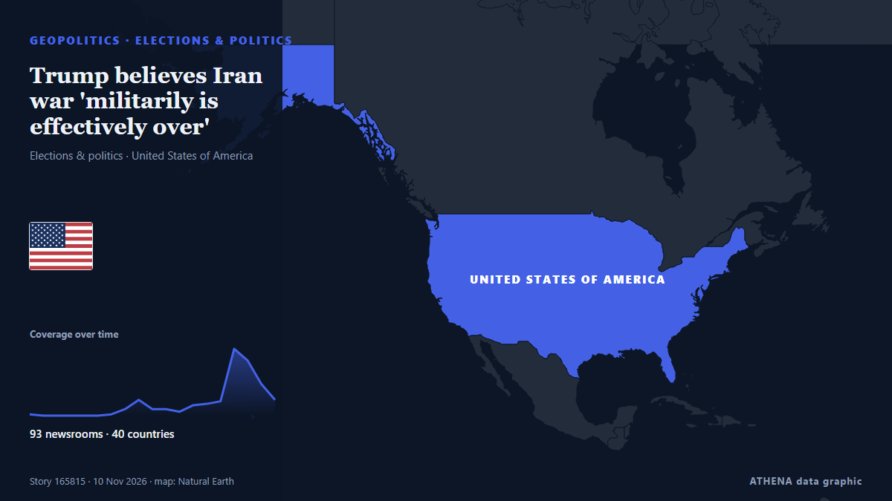

Elections & politics
SponsoredPresented by  Cybernetics and Artificial Intelligence Lab Welcome to the Cybernetics and Artificial Intelligence Laboratory, established at the Department of Business Administration of the National and Kapodistrian University of Athens. The lab is headed by Professor Dimitrios Thomakos. The lab aims to do research that can be published in top venues. Our research uses tools and methods of Artificial Intelligence, and lies in the following areas: - Forecasting - Decision making - Cyber security - Finance We are always looking forward to collaborating with exceptional students!
Cybernetics and Artificial Intelligence Lab Welcome to the Cybernetics and Artificial Intelligence Laboratory, established at the Department of Business Administration of the National and Kapodistrian University of Athens. The lab is headed by Professor Dimitrios Thomakos. The lab aims to do research that can be published in top venues. Our research uses tools and methods of Artificial Intelligence, and lies in the following areas: - Forecasting - Decision making - Cyber security - Finance We are always looking forward to collaborating with exceptional students!
| 28 Oct | 0 |
|---|---|
| 29 Oct | 0 |
| 30 Oct | 0 |
| 31 Oct | 1 |
| 1 Nov | 1 |
| 2 Nov | 0 |
| 3 Nov | 2 |
| 4 Nov | 1 |
| 5 Nov | 4 |
| 6 Nov | 4 |
| 7 Nov | 6 |
| 8 Nov | 2 |
| 9 Nov | 1 |
| 10 Nov | 0 |

Trump believes Iran war 'militarily is effectively over'
Reported by 93 outlets in 40 countries since 5 Nov. First reported by Express Tribune. ATHENA rates the risk 7.5/10 (high), with 90% confidence.
Abdul El-Sayed defends calling Trump an 'unserious fool' as President says midterms 'a giant step back'
With New Hampshire and Georgia staying in Democratic hands, Republicans now look to Michigan for a pickup, where Democrat Abdul El-Sayed is competing with Republican Mike Rogers. from France 24 English
Trump questions midterm elections integrity after previously accepting results
A Democratic victory in Congress could reshape Washington’s approach to Africa, putting Trump’s deportation deals, visa restrictions and minerals partnerships under fresh scrutiny. from The Africa Report
Merz nominates Ilse Aigner as Germany's president
German Chancellor Friedrich Merz formally nominated Bavarian State Parliament's President Ilse Aigner as the country's next president, paving the way for her to become Germany's first female… from AzerNews
Netanyahu rival Eisenkot to be tasked with forming new government following Israeli elections
In Israel, a candidate tasked with forming a new government has 28 days to carry out the job. from Euronews English
South Africa’s ANC suffers worst-ever local elections result
South Africa's ANC has suffered its worst-ever local elections result, securing just 30% of the vote. from Al Jazeera English
Spain could ‘pull out of 2030 World Cup’ if final given to Morocco
PP leader Alberto Feijoo made the pledge on TV show 'El Chiringuito, three weeks before the general election and amid tense relations with Rabat. from The Olive Press
Israel’s president picks Netanyahu rival Gadi Eisenkot to form government
The deadlocked election had left neither Prime Minister Benjamin Netanyahu nor his strongest rival, Gadi Eisenkot, with a clear path to power. from The Independent
Just In: South Africa’s ANC slumps to 30.76 per cent of votes in worst-ever election result
Gauteng and KwaZulu-Natal account for 13 of the 20 murders involving political figures and supporters recorded during the election period, as police investigate 139 election-related criminal cases… from IOL
After midterm rout, Vance tries to build his own 2028 brand
Vance defended Republicans' losses by focusing almost entirely on his policy portfolio, Reuters found. from Express Tribune
New Zealand Election Too Close to Call
New Zealand's election is too close to call, with National's bloc on 67 of 130 or 131 seats and the final result due on Friday, 27 November. from The Rio Times
New Zealand dollar little changed after tight election result
A larger reaction may ensue once the final results are declared on November 27. from BusinessDesk
Israeli President Herzog tasks Gadi Eisenkot with forming new government
The president's decision comes after 67 lawmakers endorsed Eisenkot in a round of consultations held with party representatives after the October 27 election, compared with just 46 who endorsed… from Haaretz (English)
Trump says elections were ‘giant step back in history’ for US
Democrats captured both chambers of Congress in last Tuesday's midterms that dealt historic losses for the Republican Party in states they had dominated for decades. from Free Malaysia Today
New Zealand poised for weeks of political wrangling after knife-edge poll
Preliminary results show Christopher Luxon's National Party winning the most seats, with a slim majority of just two when its coalition partners are included. from Free Malaysia Today
New Zealand election early count shows two main parties near deadlocked
Left-leaning parties, including Labour, are aiming to make the National Party coalition the first one-term government in nearly 50 years. from The Business Standard (Bangladesh) (working feed)
After JD Vance, now Trump Jr blames Iran war for US midterms defeat
Says war in Iran had weighed on Republican candidates, even as voters backed his handling of it. from Express Tribune
Colombian Firms Back Brazil Before Lula Win
Our experts unpack what Lula’s victory means for Brazil’s ties with Washington and how it could reshape a region trending right. from Atlantic Council
French presidential hopeful Melenchon pledges minimum wage rise, retirement at 60
PARIS, Nov 7 - Jean-Luc Melenchon, the hard-left French presidential hopeful, will pledge to raise the minimum wage and restore the country's retirement age to 60 when he launches his 2027 election… from The Straits Times